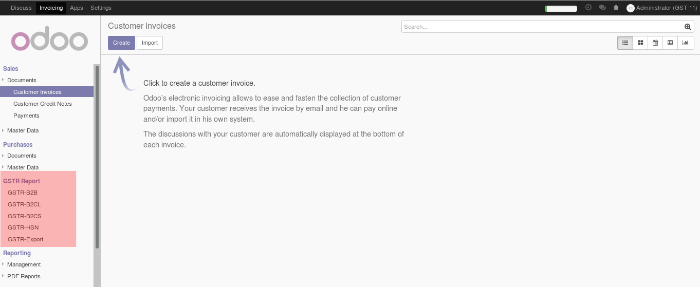

If Customer is GST Registered then click the GSTIN Registered and add GSTIN Number and Customer is E-commerce Operator then click E-Commerce.
Select Invoice Type and E-commerce Operator in Customer invoice.Data file are incuded for all Taxes of GST, So no need to create taxes.

GSTR-1 Report i.e. B2B,B2CS,B2CL,HSN is included.
Invoice Report in PDF is printable.
Invoice Report in Xlsx is exportable.